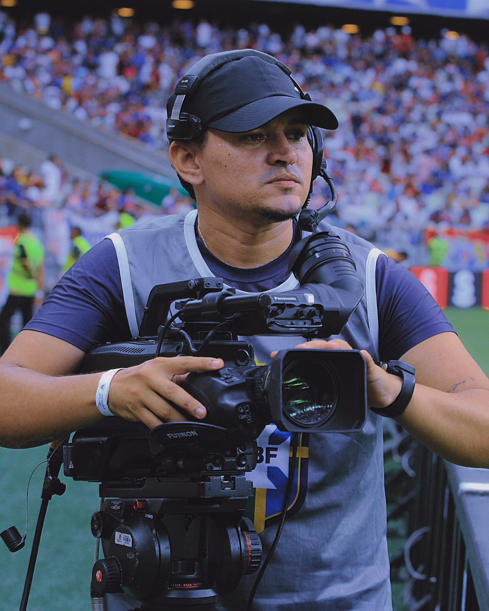

Sou Wallisson Eugenio, operador de câmera broadcast apaixonado pela intensidade e precisão das transmissões ao vivo. Tenho presença constante na cobertura de grandes eventos esportivos, como o Brasileirão e o Mundial de Clubes de Vôlei.
Trabalho em campo junto a grandes emissoras como TV Globo, SporTV, Premiere e Band TV, garantindo que o espectador sinta a atmosfera e a emoção exatas do evento, diretamente de casa.
Anos de Experiência
Projetos Entregues
